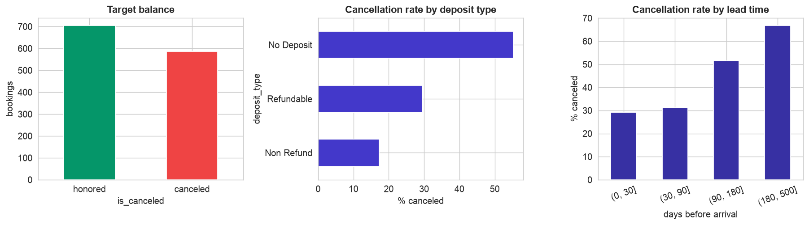
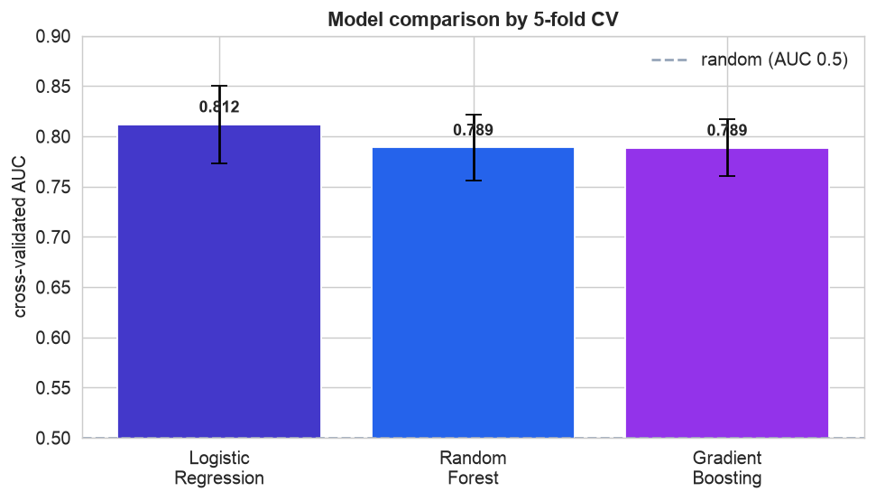
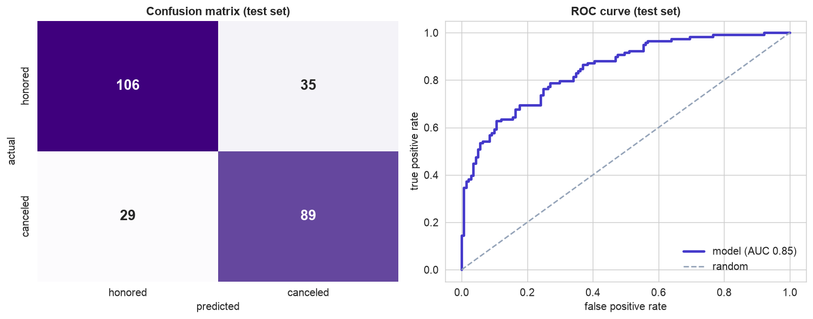
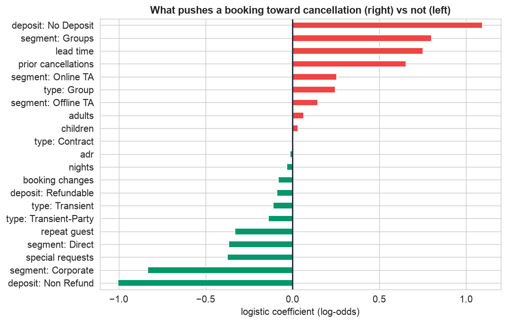

You have met the algorithms; now watch them work together on a real problem. A hotel wants to know, at booking time, which reservations are likely to be canceled, so it can overbook wisely and send timely reminders. The data is a genuine mess. The challenge is not choosing a clever model, it is running the whole pipeline honestly so the final number can actually be trusted.
Any notebook can fit a model. This chapter is about doing it so the result is real: split off a test set first, beat a baseline, compare models by cross-validation, tune on validation only, keep every transform inside a pipeline, and touch the test set exactly once.
The 12-Step Method
The same repeatable loop used in every case study, here aimed at a classification model. The companion notebook runs all twelve steps; the sections below narrate the story.
One row per reservation with lead_time, nights,
adults, children, prior_cancellations, booking_changes,
deposit_type, market_segment, customer_type, adr (daily rate),
total_special_requests, is_repeated_guest, and the target is_canceled.
Define, Collect, Inspect, Clean (Steps 1–4)
Define the objective
Predict, at booking time, whether a reservation will be canceled (a yes/no classification), and learn what drives the risk. A hotel can use the score to overbook safely, prompt a deposit, or send a confirmation nudge to shaky bookings.
Collect the data
A CSV export from the property-management system. The same one-line pandas readers apply to a SQL warehouse, an Excel workbook, or a REST API, only the first line changes.
Inspect the data
info(), isna(), and value_counts() expose the mess: duplicate bookings,
impossible negative lead times, missing children and adr, and categories written many
ways (No Deposit, no deposit, NO DEPOSIT, ...).
Clean the data
| Problem | Detail | Fix |
|---|---|---|
| Duplicates | 22 repeated booking_id | deduplicate |
| Impossible values | 9 negative lead_time (data errors) | drop those rows |
| Messy categories | deposit ×11 spellings, segment ×15 | standardize to one scheme |
| Missing values | 34 children, 16 adr | leave for the pipeline (impute inside CV, not now) |
After cleaning, 1,291 bookings remain, about 45% canceled. The missing values are handled later, inside the pipeline, so the fill value is learned from training data only.
Visualize, Transform, Split (Steps 5–7)
Visualize the signal
Cancellation risk climbs steeply with lead time (a booking made months ahead is far likelier to
fall through) and depends strongly on deposit type: guests who put money down rarely cancel, while
No Deposit bookings are the riskiest. That separable structure is what a model can exploit.

Seeing the signal. Left, the target is about 45% canceled, common enough to learn from and a real baseline to beat (not a rare needle in a haystack). Center, cancellation rate by deposit type:
No Deposit bookings cancel over half the time, while Non Refund guests, who
have money at stake, cancel under 20%. Right, the rate climbs steadily with lead time, from under
30% for last-minute bookings to about 65% for those made six months out. The signal is real and separable, exactly
what a model needs.Transform, inside a pipeline
Numeric columns are median-imputed and standardized; categoricals are one-hot encoded. Crucially, all of this lives
inside a scikit-learn Pipeline, so each cross-validation fold re-fits the preprocessing
on its own training data. This is the single most important guard against data leakage:
impute or scale before splitting and information from the test set silently contaminates training.
Split: train / validation / test
Before building anything, quarantine a test set, here 20% (259 bookings), locked away until the very end. The remaining 80% (1,032 bookings) is for fitting and tuning. Rather than a single fixed validation set, we use k-fold cross-validation on the training data: it plays the validation role but rotates through every row, giving a steadier estimate.
Build and Validate (Steps 8–9)
Build a baseline, then candidates
Never trust a model without a baseline. A dummy that always predicts the majority class ("not canceled") is already 54% accurate, so raw accuracy near that is meaningless. We score by ROC-AUC (baseline 0.5) and compare three candidates by 5-fold cross-validation:
| Model | 5-fold CV AUC | Note |
|---|---|---|
| Logistic Regression | 0.812 | simplest, and the winner |
| Random Forest | 0.789 | flexible, no better here |
| Gradient Boosting | 0.789 | flexible, no better here |
The instructive surprise: logistic regression beats both tree ensembles. On clean, mostly-linear tabular data a well-regularized linear model is often the strongest and the most interpretable, do not reach for a boosted forest reflexively. A learning curve (in the notebook) confirms the training and validation scores converge, so the model is not badly overfit and much more data would help only a little.

Comparing models fairly. Each bar is a model's mean AUC across the five cross-validation folds; the thin whiskers show how much it varied fold to fold, and the dashed line is random guessing (0.5). All three clear the baseline comfortably, but logistic regression (0.81) edges out both tree ensembles (0.79), and its error bar overlaps theirs, so the simplest model is at least as good. That is reason enough to keep it.
Tune, then the one honest test
GridSearchCV sweeps the regularization strength and settles on C = 0.3 (CV AUC 0.812).
Only then do we unlock the test set, once, for the final verdict:
| Held-out test metric | Value | Meaning |
|---|---|---|
| Accuracy | 0.75 | vs 0.54 baseline, a real lift |
| ROC-AUC | 0.85 | strong ranking of risk |
| Recall | 0.75 | catches 3 of 4 real cancellations |
| Precision | 0.72 | most flagged bookings truly cancel |
Because tuning happened only on cross-validation and the test set was touched exactly once, 0.85 is an honest estimate of next month's performance, not an optimistic mirage. The confusion matrix (106 true-honored, 89 true-canceled, 35 false alarms, 29 misses) makes the trade-off concrete.

The final verdict, on data the model never saw. Left, the confusion matrix: the model correctly labeled 106 honored and 89 canceled bookings, against 35 false alarms (flagged but honored) and 29 misses (canceled but not flagged). Right, the ROC curve bows well above the diagonal (AUC 0.85): across every possible threshold the model ranks risky bookings above safe ones far better than chance. Because the test set was touched only here, at the very end, these numbers are trustworthy.
Interpret and Deploy (Steps 10–11)
Interpret the drivers
Because the winner is a logistic model, its coefficients read as odds. The strongest cancellation risks
are No Deposit bookings, the Groups segment, long lead times, and a history
of prior cancellations. The strongest reliability signals are Non Refund
deposits, Corporate bookings, and more special requests (a sign of genuine intent). Every
one matches hotel-industry intuition, evidence the model learned real structure, not noise.

What pushes a booking toward cancellation. Each bar is a feature's logistic coefficient (in log-odds). Bars pointing right (red) raise cancellation risk, no deposit, the
Groups
segment, long lead time, and prior cancellations; bars pointing left (green) mark reliable bookings,
a non-refundable deposit, Corporate bookings, and more special requests. The longer the bar, the
stronger the effect. This ranking is only readable because we kept a simple, interpretable model.Deploy the model
Persisting the fitted Pipeline with joblib bundles preprocessing and model together, so
production applies the exact same transforms as training. The model then serves a cancellation probability per
booking. The real work begins after launch: watch for data drift, track live accuracy, and
retrain on fresh data before performance decays, the subject of Chapter 126.
Communicate: the Plain-English Write-Up (Step 12)
For a non-technical reader
What is this? We built an early-warning tool that looks at a new hotel reservation and estimates how likely it is to be canceled, so the hotel can plan ahead (overbook sensibly, or nudge a wobbly booking with a reminder or a small incentive).
What goes in, and what comes out
Inputs: ordinary booking details the hotel already has, how far ahead it was booked, how many nights and guests, whether a deposit was paid, how the guest booked (online, direct, corporate, group), the room rate, the number of special requests, and whether it is a repeat guest. Output: a single number between 0 and 1, the estimated chance the booking will be canceled.
The decisions we made, and why
- ✓We cleaned the file first, removing duplicate bookings, impossible entries, and tidying labels that were spelled several ways, because a computer treats "No Deposit" and "no deposit" as different things.
- ✓We hid 20% of the data ("the test set") and never let the model see it while learning, so we could get an honest grade at the end, the same reason a teacher does not hand out the exam answers in advance.
- ✓We compared several methods against a dumb "always guess the common answer" benchmark, and kept the simplest one that did best, because a simple model is easier to trust, explain, and maintain.
How good is it, in plain terms
On bookings it had never seen, the tool is right about three times in four, far better than the 54% you would get by guessing, and it correctly flags roughly three of every four bookings that really do cancel. When it says "70% likely to cancel", about 70% of such bookings genuinely do (the numbers are trustworthy, not just relative rankings).
What actually drives a cancellation
Bookings made far in advance, with no deposit, by groups, or by guests who have canceled before are the most likely to fall through. Bookings with a non-refundable deposit, from corporate accounts, or with several special requests are the most reliable. Bottom line: the biggest single red flag is a no-deposit booking made a long time ahead, and a simple, explainable model predicts cancellations about as well as anything fancier.
Run the entire project in Python
The companion notebook is the full 12-step pipeline: it loads and cleans the messy bookings file, visualizes the cancellation signal, builds a leakage-free preprocessing pipeline, holds out a test set, benchmarks a baseline against logistic regression, random forest, and gradient boosting by cross-validation, draws a learning curve, tunes the winner with GridSearchCV, evaluates once on the test set (confusion matrix and ROC), interprets the drivers, and saves the model, with every table and chart explained.
View opens the rendered notebook instantly.
Open in Colab runs it live. To run locally, install numpy, pandas,
matplotlib, seaborn, and scikit-learn.
🎓 Key Takeaways
- ✓Split first, test last: lock away a test set before anything else and evaluate on it exactly once, for an honest performance number.
- ✓Always beat a baseline: a majority-class dummy was 54% accurate, so judge by AUC and compare against it.
- ✓Cross-validation is your validation set: it compares models and tunes hyperparameters using the training data efficiently and robustly.
- ✓Keep every transform in a pipeline: imputing or scaling before the split leaks the test set into training, a pipeline prevents it by construction.
- ✓Simple often wins: a regularized logistic regression beat the tree ensembles and is fully interpretable, complexity must earn its place.
Take It Further
Five ways to extend the project in the notebook:
A business-cost threshold
The 0.5 cutoff is arbitrary. Set it by the cost of a missed cancellation versus a false alarm.
FN×cost + FP×cost.Engineer an interaction
Add a lead_time × no-deposit feature, the thing a tree gets for free, and see if the linear model improves.
Tune a gradient-boosting rival
Grid-search a GBM properly and compare it to the logistic model on the test set.
GridSearchCV over n_estimators, max_depth, learning_rate.Check calibration
Does "70%" really mean 70%? Draw a reliability curve of predicted vs actual cancellation rates.
calibration_curve(y_test, prob).Score a new booking
Build a one-row profile and get its cancellation probability straight from the saved pipeline.
model.predict_proba(one_row), no manual preprocessing needed.All five, worked in a companion notebook
A second notebook, Take It Further, rebuilds the Chapter 120 model and works every one of these five extensions with visuals and explanations, a cost-based decision threshold, an engineered interaction, a tuned gradient-boosting rival, a probability-calibration check, and scoring a new booking, closing with a plain-English summary.
Quiz: Test Yourself
Eight questions on the end-to-end workflow. Answer them, hit Check Answers, and keep refining until you score 100%. Your progress is saved, so you can hop back to the chapter and return anytime.
With the workflow in hand, the next chapters apply it to harder, higher-stakes problems. Chapter 125 · Case Study: Fraud Detection tackles the extreme case, a rare positive class, where accuracy lies and the right metrics and thresholds decide everything.